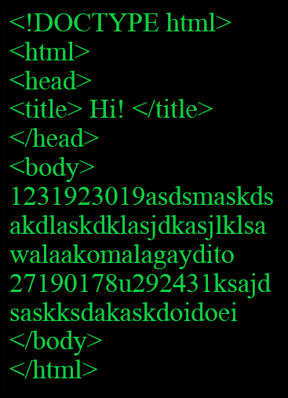
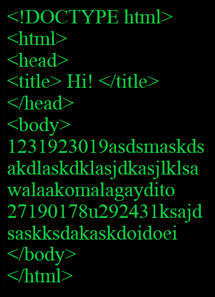
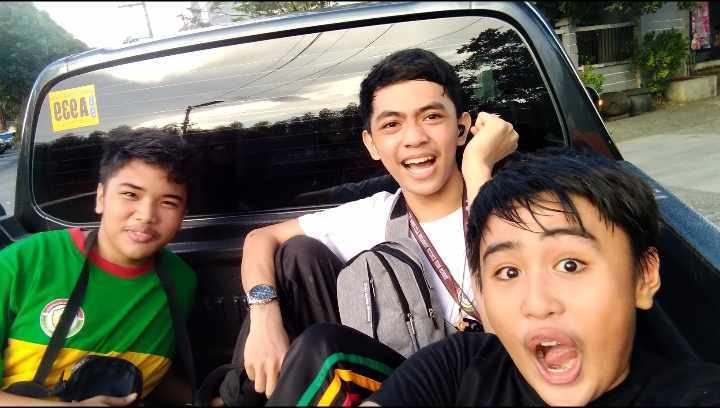
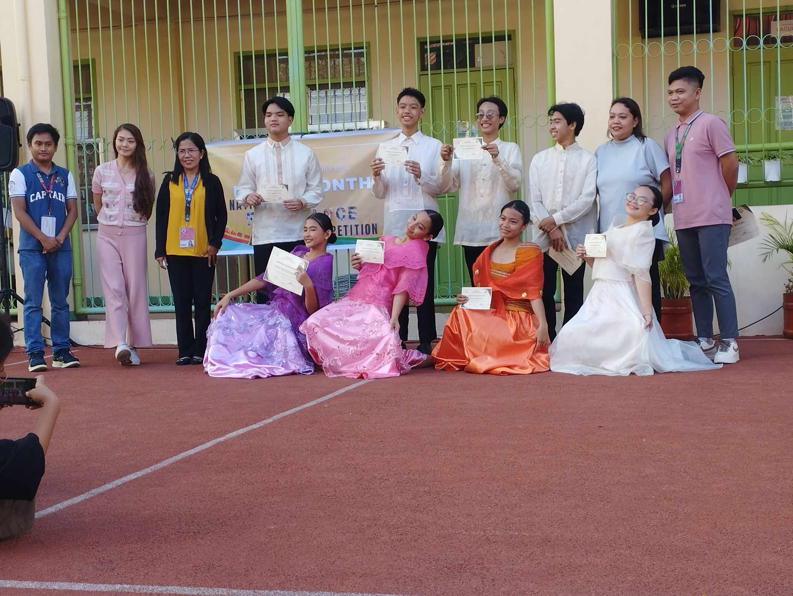
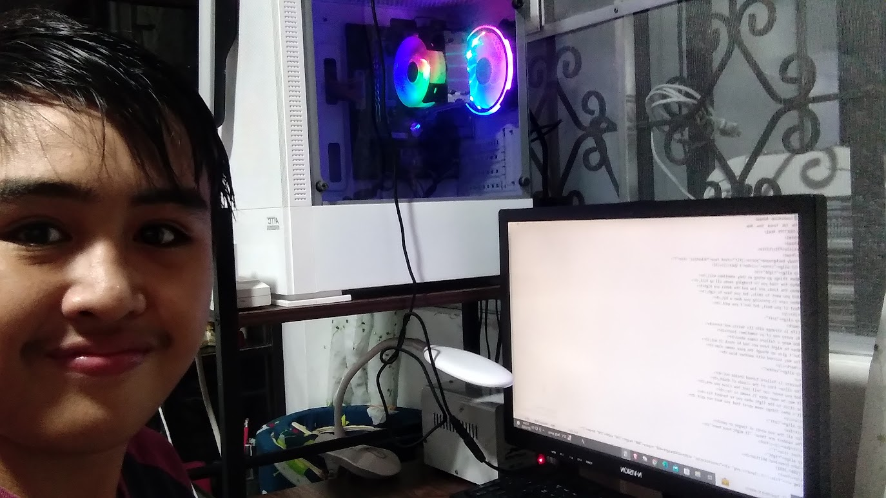
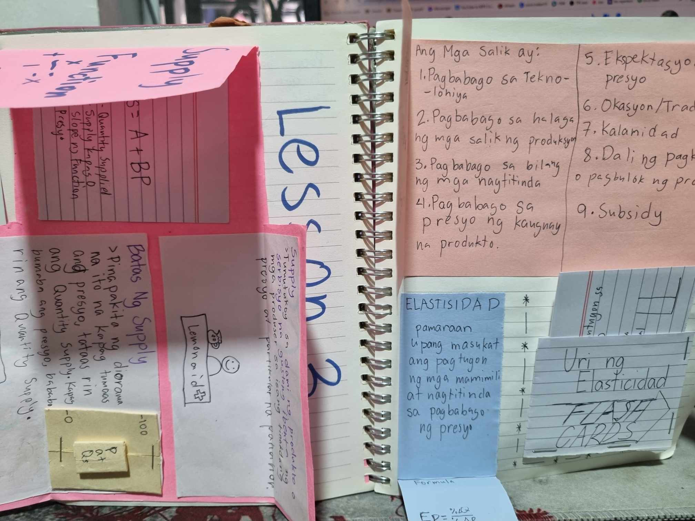
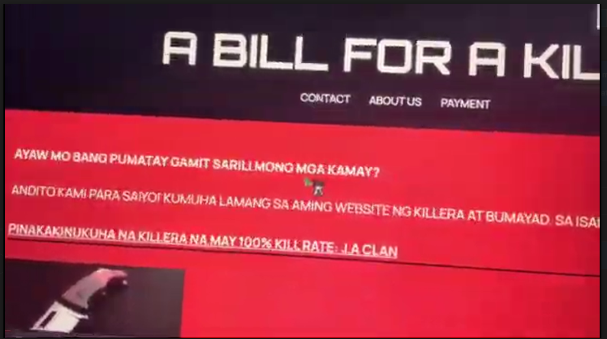
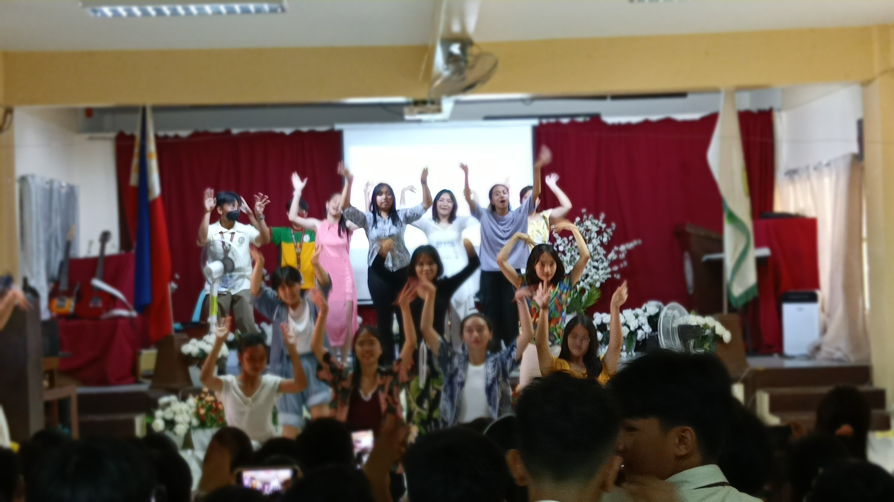
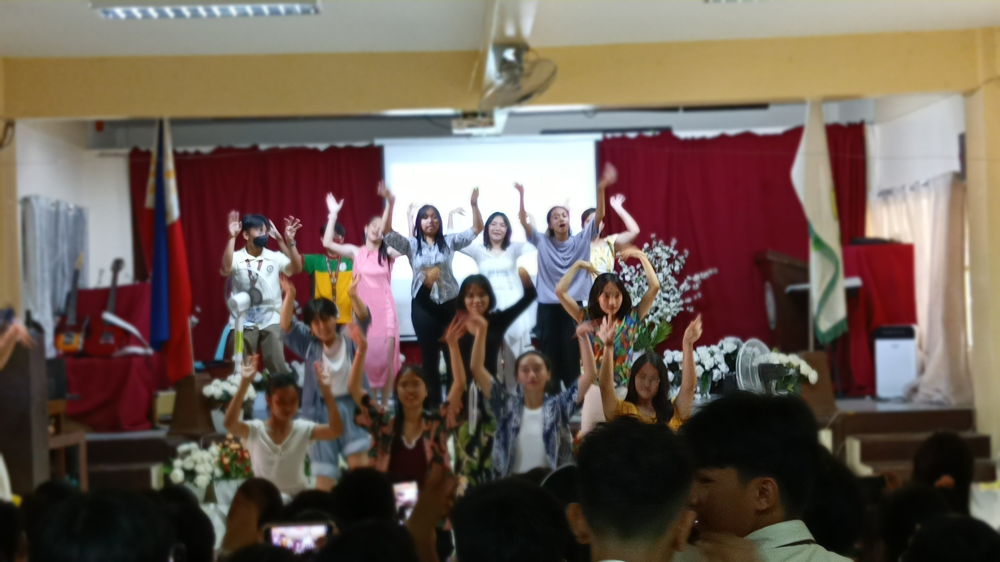

> Made a movie trailer about a book made by Sir Bien "Courage". It's about these students that hate their teacher because they cannot be open-minded and later realize the mistakes they have done.
> ⬅⬅⬅⬅ WATCH THE TRAILER PLS!!!! ♥
 


>New Class Officers, voted for who was trustworthy enough to lead the classroom to success: (I made the photo 😎)
> 1st Artwork from Sir Santos, made a pretty decent art about the early life of cavemen in the prehistoric period where stories were told by drawing on walls in their caves. I got a score of.... (drumroll please 🥁)
45/50!
(mekus mekus lang to 🤠)

> Made a video about Sir Santos for Teachers Day as a task for our first PT in ICT. We also had a hard time in editing and getting clips to form a simple, yet incredible video to celebrate the efforts of teachers for the development of others!
(Click me to watch the amazing video!)
[Thanks to: Ernest, Lexi, Zark, Mars, and especially Nina (did most of the editing) for contributing to the video!]
> My first website! Made a website about a poem which I forgot using simple html coding. Used chicken nuggets as a background because why not? Also counted as my 2nd PT in ICT.
(Got a perfect score! 💯 )
> Made a movie trailer about a book made by Sir Bien "Courage". It's about these students that hate their teacher because they cannot be open-minded and later realize the mistakes they have done.
> ⬅⬅⬅⬅ WATCH THE TRAILER PLS!!!! ♥
> Interactve notebook in AP, had a pretty hard time making it (No creativity 😢). Most parts were inspired by youtube videos. Got a 43/50! 🤩
crammed it on the day before submission ğŸ¤
>1st ICT PT in 2ND Quarter, I forgot what it is about.....
(wala lang talaga ako malagay dito ahahahhahah)

> MR. AND MS. BOOKLANDIA, represented Grade 9 Family as G.I Joe 💂 dahil puro mekus mekus ang mga costume sa boys 👺. HINDI AKO NAGENJOY DITOOOO 😎


> Played as Center (substitute) for Red Falconets
> Practice para sa V-POP, me and the gang nasa pickup truck nila Ernest (King of Basic Calculus🤴)
> Amazing performance by 9-Fidelity and Family! > We did cha cha and binuhat ako ni Monique (Easy 💯 sa pe!!) > WAG PANUURIN PLSSSS
> Learning how to code tables
> Another Interactive Notebook (courtesy of Sir. Calimbas 👨‍🏫)
> PT For esp, describes how killing is not makatarungan for the panlipunan
> Nag Waltz kami (ako yung leader 😢)
> Ang documentation na ito ay nagpapakita ng pagsikap ng aming seksyon sa paggawa ng variety show, "Her Story". Pinapakita rin dito ang mga hamon na aming hinarap upang maipakita namin ang aming talento sa sining, pagsasayaw, pagkanta, paggamit ng instrumento. Dahil sa pagsisikap ng aming mga kaklase, marami kaming natutunan na maaaring magamit sa pamumuhay katulad ng pagbabadyet, pagtutulong, at pagsisikap parang sa makatarungang panlipunan. Marami rin kami naranasan na mga hamon sa paggawa ng aming variety show, isa sa mga aming hinarap na hamon ay ang kakulangan sa oras para matapos ang aming props at costume. Ngunit kami parin ay nagtagumpay at nagpakita ng aming mga talento para sa selebrasyon ng "Women's Month". Sa huli, ang aming variety show ay hindi lamang isang pagpapakita ng talento ngunit ito ay isang pagpapakita ng pagtutulungan, pagkamalikhain, at tiyaga sa pagagawa ng aming variety show. Ito rin ay nagpapakita na dapat irespeto nating ang lahat ang magkaroon ng pantay-pantay na tingin para sa makatarungan na lipunan. Nakapagbigay inspirasyon ang show na ito na dapat tayoy magsasama at may pantay na tingin upang mapaunlad ang ating mga kaalaman at sarili.
> 2-0 UNDEFEATED!!! 🔥🔥🦅🦅
> Kuya Zach Sia got the w MVP!!!!!
> I won Fourth Singles in Table Tennis 1ST PLACE!!!!!(🥇 no pic of certificate :[ )
> Our team performed the best in LPSCI 2024 intrams!
RED FALCONETS
BLUE BEARCATS
29
28

🎉🍾 VPOP 🎉🍾
> Although mababa score namin dun, masaya parin na experience!! (85 whahahahahaha)
> Naniniwala parin kami sa diwa ng pasko 🎄

🗠FOLK DANCE ğŸ«
> 1st Runner up 💯💯💯🔥🔥🔥🔥
> They were able to show the wonders of folk dance through their talents💗
> Azuris (one of my friends) cooked!!! 🍳🥘🥞
💃🕺 CHA-CHA 🕺💃

😶PRACTICING FOR A QUIZğŸ³
> My practicing results:
Product
Value
Sold
Burger
100 PHP
24 Orders

Interactive Notebook (AGAIN) 📓
> Got a super decent score of 48/50 💯💯💯, 49 sana pero kasi dugyot daw gawa ko kaya hindi daw niya ako binigyan ng 49 ☹.
> Special thanks to my Nanay and best friend Mars for giving me a grade in AP 🥘

👻🔪🔪ESP HORROR MOVIEEE 👻🔪🔪
> Ako yung killer sa movie 😈😈😈
> SHOUTOUT TO ANN KASI SIYA NAG EDIT NG MOVIEEE (no mp4 kasi di mahanap 😎)
> SHOUTOUT TO MARCEL KASI PINAYAGAN KAMI SA BAHAY NILAAA
🔥🔥🔥🔥🔥🔥🔥 QUARTER 3 🔥🔥🔥🔥🔥🔥🔥

💃💃ğŸ¶ğŸ¤µ WALTZ 🗿🗿🗿ğŸ¥
> We did pretty decent based on results 💯💯💯
> SUPER DUPER DUPER THANK YOU TO CHARLENE AND CLAIRE FOR HELPING SA CHOREO!!!! 💗💗💖💖
💯 SPECIAL SEGMENT 💖: 📺VARIETY SHOW 📺
> MARAMING SALAMAT PO DIREKTOR 🎬 SA PAGTULONG SA PAGGAWA NG AMING VARIETY SHOW DAHIL HINDI NAMIN MAGAGAWA ITO KUNG WALA IKAW!!!! 💖💖💖
.jpg)

 
